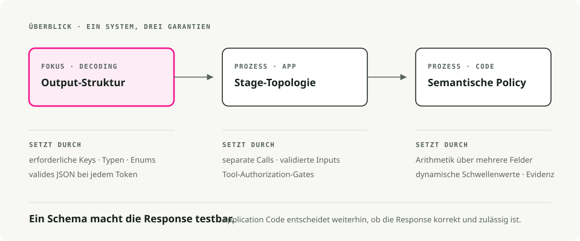
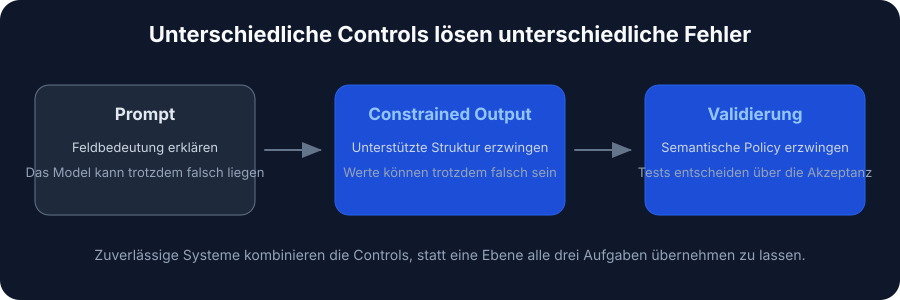
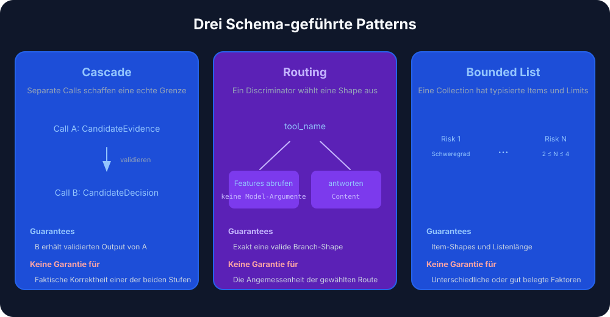
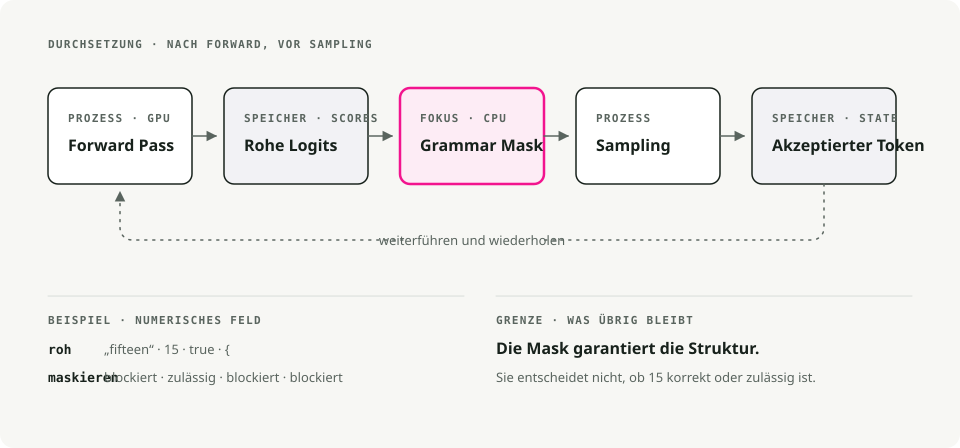
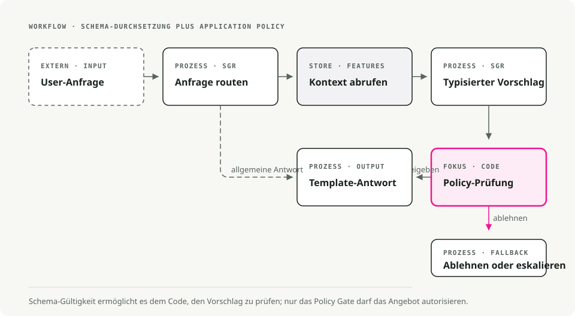

Automatische Übersetzung
Dieser Artikel wurde automatisch aus der englischen Originalversion übersetzt.
Schema-Guided Reasoning auf vLLM: Strukturierte Ausgaben mit xgrammar und Pydantic
Eine Retry-Schleife ist ein Eingeständnis. Sie sagt: Ich habe erwartet, dass das Modell valides JSON zurückgibt, es hat es nicht getan, also würfle ich noch einmal. Der meiste LLM-Agent-Code, mit dem ich gearbeitet habe, stützt sich stark auf Retries, und das JSON ist trotzdem oft genug kaputt, dass am Ende jemand einen Alert dafür verdrahtet.
Schema-Guided Reasoning (SGR) überspringt dieses Retry-Spiel, indem es das Schema auf Token-Ebene durchsetzt. Du definierst die Reasoning-Topologie als Pydantic-Schema, und die Inference-Engine maskiert vor dem Sampling jedes Token aus, das dagegen verstoßen würde. Die Ausgabe ist per Konstruktion valide, nicht per Retry.
Kurzfassung. SGR nutzt constrained decoding, um die Ausgabe eines LLMs an ein von dir kontrolliertes Pydantic-Schema zu binden. In Kombination mit dem xgrammar-Backend von vLLM erhältst du jedes Mal valides JSON – bei vernachlässigbarem Latenz-Overhead.
Was ist Schema-Guided Reasoning?
Schema-Guided Reasoning ist eine Technik, die Rinat Abdullin 2024 beschrieben hat. Statt das Modell Text frei vervollständigen zu lassen (was inkonsistent oder mehrdeutig sein kann), gibst du ihm eine strikte Vorlage, die festlegt:
- welche Schritte es durchlaufen muss, damit es die Analyse nicht überspringen kann
- die Reihenfolge dieser Schritte, damit das Reasoning von den Daten zur Entscheidung läuft
- worauf es seine Aufmerksamkeit richten soll, damit die Tiefe dort ankommt, wo sie relevant ist
Du kannst es dir als kognitive Checkliste vorstellen, der das Modell folgen muss.

Warum SGR wichtig ist
Wenn du ein Schema mit Feldern wie churn_analysis, margin_math und max_discount_percent definierst, muss das Modell sie der Reihe nach befüllen. Es kann nicht direkt zur Rabattentscheidung springen, ohne zuerst die Analyse auszuschreiben.
Das gibt dir:
- reproduzierbares Reasoning über wiederholte Läufe hinweg
- auditierbare Ausgaben, bei denen jeder Schritt inspizierbar ist
- Zwischenfelder, die du gegen einen Testdatensatz bewerten kannst
- kleinere Modelle, die dadurch praktikabel werden, weil das Schema erzwingt, was das Modell sonst erst lernen müsste
- den in Produktions-Workloads häufig berichteten Genauigkeitsgewinn von 5–10 %
SGR vs. Chain of Thought vs. Prompt Engineering
Die drei Ansätze unterscheiden sich vor allem darin, wie stark sie das Modell einschränken.

| Feature | Prompt Engineering | Chain of Thought | Schema-Guided Reasoning |
|---|---|---|---|
| Ausgabestruktur | Variabler Text | Freiform-Prosa | Starres JSON/Pydantic |
| Steuerungsmechanismus | Semantische Überredung („Please output JSON“) | Heuristisches Prompting („Let's think step by step“) | Constrained decoding (grammatikbasiert) |
| Reasoning-Ablauf | Modell bestimmt | Modell bestimmt | Entwickler bestimmt (Schema-Topologie) |
| Auditierbarkeit | Gering (erfordert Parsing) | Gering (erfordert Lesen von Prosa) | Hoch (Inspektion auf Feldebene) |
| Integration | Schwierig (Regex-Parsing) | Schwierig (variables Format) | Trivial (native Objekt-Deserialisierung) |
| Fehlerrate | Hoch (Formatvariabilität) | Mittel (Halluzination des Formats) | Nahe null (Syntax von der Engine erzwungen) |
| Modellanforderung | Starkes Instruction Following | Starke Reasoning-Fähigkeit | Funktioniert auch mit kleineren Modellen |
Prompt Engineering: semantische Überredung
Please analyze the customer data and output your response as valid JSON
with the following structure: {"discount": <number>, "reason": <string>}
Be careful with the formatting!
Du hoffst, dass das Verständnis des Modells von „output JSON“ stärker ist als seine Tendenz, konversationell zu sein. Ein Modell-Update, eine Temperaturänderung oder ein anderes Few-Shot-Beispiel kann deinen Parser brechen.
Chain of Thought: besseres Reasoning, gleiches Strukturproblem
Let's think step by step:
1. First, I'll analyze the customer's churn risk...
2. Then I'll calculate the margin...
3. Therefore, I recommend a 15% discount.
CoT verbessert die Reasoning-Genauigkeit, verschlechtert aber die Struktur. Die Ausgabe ist unvorhersehbare Prosa, die sich kaum zuverlässig parsen lässt. Meistens endest du mit einem zweiten LLM-Call, nur um die strukturierten Daten herauszuziehen.
SGR: strukturierte Chain of Thought
SGR behält die CoT-Intuition bei, dass zwischengeschaltetes Reasoning die Genauigkeit verbessert. Es formalisiert nur die Schritte:
class PricingLogic(BaseModel):
# 1. Data Analysis (must complete before decision)
churn_analysis: str = Field(..., description="Analyze churn_probability")
financial_analysis: str = Field(..., description="Analyze cart_value and margin")
# 2. Math Enforcement (explicit calculation)
margin_math: str = Field(..., description="Calculate: 'Cart $X * Y% = $Z'")
# 3. Decision Constraint (bounded by prior analysis)
max_discount_percent: float = Field(..., description="Max allowed discount")
# 4. Final Output
offer_code: str
customer_message: str
Das Modell kann max_discount_percent nicht ausgeben, bevor churn_analysis, financial_analysis und margin_math befüllt sind. Das Schema erzwingt die Reihenfolge des Reasonings.
SGR-Muster
SGR hat drei Kernmuster, die sich zu größeren Workflows kombinieren lassen.

1. Cascade: sequentielle Reasoning-Schritte
Cascade erzwingt eine Reasoning-Reihenfolge. Jedes Feld muss abgeschlossen sein, bevor das nächste folgt.
from pydantic import BaseModel
from typing import Literal, Annotated
from annotated_types import Ge, Le
class CandidateEvaluation(BaseModel):
"""Evaluate a job candidate with enforced reasoning order."""
# Step 1: Summarize (forces context awareness)
brief_candidate_summary: str
# Step 2: Rate (bounded integer)
rate_skill_match: Annotated[int, Ge(1), Le(10)]
# Step 3: Decide (constrained choices)
final_recommendation: Literal["hire", "reject", "hold"]
Geeignet für: Kandidatenbewertung, Dokumentklassifikation, Compliance-Analyse, medizinische Diagnose.
Das Modell muss brief_candidate_summary schreiben, bevor es bewerten kann, und bewerten, bevor es empfehlen kann. Es gibt keine Abkürzung.
2. Routing: ein semantisches switch statement
Routing bringt das Modell dazu, sich auf einen Pfad aus einer Menge von Optionen festzulegen, implementiert mit Typen vom Typ Union.
from pydantic import BaseModel
from typing import Literal, Union
class FeatureLookup(BaseModel):
"""Route to database lookup."""
rationale: str
tool_name: Literal["fetch_user_features"] = "fetch_user_features"
user_id: str
class GeneralResponse(BaseModel):
"""Standard response for non-pricing queries."""
tool_name: Literal["respond"] = "respond"
content: str
class RouterSchema(BaseModel):
"""The model must pick exactly ONE branch."""
action: Union[FeatureLookup, GeneralResponse]
Geeignet für: Intent-Klassifikation, Tool-Auswahl, Support-Triage, Multi-Agent-Dispatch.
Der Literal-Discriminator (tool_name) sorgt dafür, dass das Modell genau einen Branch auswählt und nur die Felder befüllt, die dieser Branch benötigt.
3. Cycle: wiederholtes Reasoning mit Listen
Cycle zwingt das Modell, mehrere Elemente zu erzeugen, mit Grenzen dafür, wie viele.
from pydantic import BaseModel
from typing import List, Literal, Annotated
from annotated_types import MinLen, MaxLen
class RiskFactor(BaseModel):
explanation: str
severity: Literal["low", "medium", "high"]
class RiskAssessment(BaseModel):
"""Generate 2-4 risk factors."""
factors: Annotated[List[RiskFactor], MinLen(2), MaxLen(4)]
Geeignet für: Risikobewertung, Issue-Extraktion, parallele Tool-Calls, mehrstufige Planung.
Die Grenzen MinLen und MaxLen erzwingen mindestens 2 und höchstens 4 Elemente. In Kombination mit Routing lässt sich damit ein Batch von Tool-Calls mit fester Breite dispatchen.
SGR funktionsfähig machen: constrained decoding
Die obigen Muster sind nur Pydantic-Schemas. Bindend werden sie erst durch constrained decoding (auch Structured Output genannt).
Constrained decoding verändert den Schritt der Token-Generierung. Statt das Modell frei aus seinem Vokabular samplen zu lassen, wendet die Engine eine Grammar-Maske an, die Tokens blockiert, welche das Schema verletzen würden. Das passiert in der Inference-Engine, nicht in deinem Anwendungscode.
[!TIP] SGR erfordert keine „Reasoning-Modelle“ wie o1 oder DeepSeek-R1. Es funktioniert gut mit instruction-tuned Modellen und besonders gut mit Modellen, die aus Reasoning-Modellen destilliert wurden.
Cloud-Anbieter, die es unterstützen
Die meisten modernen LLM-Anbieter bieten strukturierte Ausgaben über constrained decoding an:
| Anbieter | Unterstützung |
|---|---|
| OpenAI | Structured Outputs (einschließlich Azure). GPT-5 verwendet JSON Schema über llguidance |
| Google/Gemini | Unterstützung für JSON Schema seit Nov 2025 (Pydantic und Zod) |
| Mistral | Custom Structured Output |
| Grok | Structured Outputs für mehrere Modelle |
| Fireworks AI | JSON Schema |
| Cerebras | Structured Outputs |
| OpenRouter | Hängt vom nachgelagerten Anbieter ab, wird auf JSON Schema abgebildet |
Inference-Engines, die es unterstützen
Für selbst gehostete Modelle haben die großen Engines alle ein Backend für constrained decoding:
| Engine | Backend |
|---|---|
| vLLM | xgrammar oder guidance |
| SGLang | Outlines, XGrammar oder llguidance |
| TensorRT-LLM | GuidedDecoding |
| Ollama | Structured Outputs |
Warum sich dieser Artikel auf vLLM und xgrammar konzentriert
Dafür gibt es einige Gründe:
- vLLM ist die am weitesten verbreitete Open-Source-Inference-Engine für LLMs, daher lässt sich das, was du hier baust, leicht portieren.
- xgrammar ist in C++ implementiert und verursacht vernachlässigbare Latenz.
- Die API von vLLM ist OpenAI-kompatibel, was Migrationen von Cloud-Anbietern günstig hält.
- xgrammar verarbeitet komplexe verschachtelte Schemas, Unions und rekursive Strukturen.
Im nächsten Abschnitt geht es darum, wie xgrammar ein Schema tatsächlich auf Token-Ebene durchsetzt.
Wie xgrammar Schemas durchsetzt
Diesen Teil solltest du präzise verstehen, weil er verändert, wie du SGR-Workflows debuggst und abstimmst.

Wo die Maskierung passiert
xgrammar verändert die Output-Logits nach dem Forward-Pass des Modells und vor dem Sampling. Es verändert nicht das Modell selbst; es filtert, welche Tokens ausgewählt werden können.
Ein Standard-Inference-Loop sieht so aus:
1. Input tokens → GPU Forward Pass → Logits (probability scores for all ~128K tokens)
2. Logits → Sampling (temperature, top-p, etc.) → Next Token
3. Repeat until done
xgrammar schiebt sich zwischen Schritt 1 und 2:
1. Input tokens → GPU Forward Pass → Raw Logits
2. Raw Logits → xgrammar Logits Processor → Masked Logits
3. Masked Logits → Sampling → Next Token (guaranteed valid)
4. Repeat until done
Das Modell berechnet weiterhin seine vollständige Wahrscheinlichkeitsverteilung auf der GPU. xgrammar läuft dann auf der CPU und wendet vor dem Sampling eine Bitmaske auf diese Logits an. Ungültige Tokens bekommen ihre Logits auf -∞ gesetzt, wodurch ihre Wahrscheinlichkeit nach dem Softmax exakt 0 ist.
Zwei Phasen
xgrammar teilt die Arbeit in Compile-Time und Runtime auf. Das ist der Grund, warum es schnell ist.
Phase 1: Grammar-Kompilierung, einmal pro Schema
# This happens once per schema
tokenizer_info = xgr.TokenizerInfo.from_huggingface(tokenizer)
grammar_compiler = xgr.GrammarCompiler(tokenizer_info)
compiled_grammar = grammar_compiler.compile_json_schema(schema_json)
Während der Kompilierung macht xgrammar Folgendes:
- Es konvertiert das JSON Schema in eine Context-Free Grammar.
- Es baut einen Pushdown Automaton (PDA), also eine Zustandsmaschine mit Stack, damit verschachtelte Strukturen wie
{"a": {"b": {"c": ...}}}verarbeitet werden können. - Es berechnet vorab, welche Tokens an jeder Position der Grammatik gültig sind. Das Ergebnis ist der „adaptive token mask cache“.
- Es kategorisiert Tokens als „context-independent“ (cachebar) oder „context-dependent“ (müssen zur Runtime gegen den Stack-Zustand geprüft werden).
[!NOTE] Etwa 99 % der Tokens erweisen sich als context-independent und landen im Cache (XGrammar paper). Die meisten Gültigkeitsprüfungen zur Runtime sind also nur Cache-Lookups, weshalb xgrammar schnell ist.
Phase 2: Runtime-Maskengenerierung, bei jedem Token
Bei jedem Generierungsschritt:
- verfolgt
GrammarMatcherdie aktuelle Position in der Grammatik. - Es schlägt die vorab berechnete Maske für context-independent Tokens nach.
- Es führt den PDA aus, um die verbleibenden context-dependent Tokens zu prüfen.
- Es kombiniert beides zu einer finalen Bitmaske und wendet sie auf die Logits an.
Warum Pushdown-Automaten und nicht Regex?
Wegen der Verschachtelung. Ein regulärer Ausdruck (eine finite Zustandsmaschine) kann Strukturen wie diese nicht zuverlässig matchen:
{ "user": { "profile": { "settings": { "theme": "dark" } } } }
Der schwierige Teil sind die schließenden Klammern }}}: Du musst dir merken, wie viele du geöffnet hast. Ein Pushdown Automaton hat dafür einen Stack und kann deshalb beliebige Verschachtelungstiefe verarbeiten. Genau deshalb kann xgrammar auch Union-Typen, verschachtelte Objekte und rekursive Schemas durchsetzen, wo regexbasierte Ansätze an Grenzen stoßen.
Ein konkretes Beispiel: ein Float-Feld generieren
Wenn das Modell "max_discount_percent": generiert, weiß xgrammar aus dem Schema, dass als Nächstes ein float kommt. Die Maske:
- erlaubt (Wahrscheinlichkeit unverändert):
0,1,2, ...,9,.,- - blockiert (Wahrscheinlichkeit auf 0 gesetzt):
",{,[,true,false,nullund den Rest des 128K+-Vokabulars
Der Forward-Pass könnte dem Wort "fifteen" eine hohe Wahrscheinlichkeit gegeben haben. Nach der Maske von xgrammar hat dieses Token Wahrscheinlichkeit 0. Das Modell muss Ziffern ausgeben.
Warum „nahezu kein Overhead“
Dafür gibt es drei Gründe:
- Parallele Ausführung. Die Maskenberechnung auf der CPU überlappt mit dem nächsten Forward-Pass auf der GPU. Während die GPU die Logits für Token N+1 berechnet, berechnet die CPU die Maske für Token N.
- Caching. Der Großteil der Gültigkeitsarbeit wird zur Compile-Time erledigt. Zur Runtime sind es meist Cache-Lookups.
- C++-Implementierung. Der Hot Path ist C++, nicht Python, und die Maske wird in place auf die Logits angewendet.
In Benchmarks zeigt xgrammar vernachlässigbaren Overhead, und strukturierte Generierung kann gelegentlich sogar schneller sein als unbeschränkte Generierung, weil das eingeschränkte Vokabular das Sampling günstiger macht.
Praktische Implementierung mit vLLM
Die Referenz ist das Projekt sgr-discount-manager, eine kleine Demo, die SGR für dynamische Preisgestaltung nutzt.

Projektstruktur
sgr/
├── agent.py # Main orchestration
├── models/
│ └── schemas.py # Pydantic SGR schemas
├── prompts/
│ ├── routing.py # Phase 1 prompts
│ └── pricing.py # Phase 3 prompts
├── store/
│ └── hybrid_store.py # Hot/Cold data retrieval
└── utils/
└── llm_client.py # LLM client wrapper with xgrammar
Schritt 1: die Schemas definieren
# sgr/models/schemas.py
from pydantic import BaseModel, Field
from typing import Literal, Union
# --- Phase 1: Routing (Union for branching) ---
class FeatureLookup(BaseModel):
"""Route to DB lookup if pricing context is needed."""
rationale: str
tool_name: Literal["fetch_user_features"] = "fetch_user_features"
user_id: str
class GeneralResponse(BaseModel):
"""Standard response for non-pricing queries."""
tool_name: Literal["respond"] = "respond"
content: str
class RouterSchema(BaseModel):
action: Union[FeatureLookup, GeneralResponse]
# --- Phase 2: Pricing Logic (Cascade for sequential reasoning) ---
class PricingLogic(BaseModel):
"""
Strict reasoning topology for dynamic pricing.
Fields are ordered to enforce the analysis→decision flow.
"""
# 1. Data Analysis (Reflection)
churn_analysis: str = Field(...,
description="Analyze churn_probability (High > 0.7).")
financial_analysis: str = Field(...,
description="Analyze cart_value and profit_margin.")
# 2. Hard Math Enforcement
margin_math: str = Field(...,
description="Calculate absolute profit: 'Cart $200 * 0.20 Margin = $40'.")
# 3. The Decision Constraint
max_discount_percent: float = Field(...,
description="Max allowed discount %. NEVER exceed margin.")
# 4. Final Output
offer_code: str = Field(..., description="Generated code (e.g. SAVE20).")
customer_message: str = Field(..., description="The final polite offer text.")
Schritt 2: ein LLM-Client, der xgrammar aktiviert
# sgr/utils/llm_client.py
from openai import OpenAI
from pydantic import BaseModel
from typing import TypeVar
import json
T = TypeVar("T", bound=BaseModel)
class LLMClient:
"""Wrapper for vLLM with xgrammar-enforced structured generation."""
def __init__(self, base_url: str = "http://localhost:8000/v1"):
self.client = OpenAI(base_url=base_url, api_key="EMPTY")
self.model = self._get_available_model()
def _get_available_model(self) -> str:
"""Auto-detect the model running on vLLM server."""
try:
models = self.client.models.list()
if models.data:
return models.data[0].id
except Exception:
pass
return "Qwen/Qwen2.5-7B-Instruct"
def run_sgr(self, messages: list[dict], schema_class: type[T]) -> T:
"""Run inference with Schema-Guided Response constraints.
Uses vLLM's guided_json with xgrammar backend to enforce
strict schema constraints at the token generation level.
"""
schema_dict = schema_class.model_json_schema()
# Enhance system message with schema for model guidance
enhanced_messages = messages.copy()
if enhanced_messages and enhanced_messages[0]["role"] == "system":
schema_json = json.dumps(schema_dict, indent=2)
enhanced_messages[0] = {
"role": "system",
"content": (
enhanced_messages[0]["content"]
+ f"\n\nRespond with JSON matching this schema:\n{schema_json}"
),
}
# vLLM's guided_json with the xgrammar backend
completion = self.client.chat.completions.create(
model=self.model,
messages=enhanced_messages,
temperature=0.1, # Low temp for deterministic reasoning
extra_body={
"guided_json": schema_dict, # Pydantic schema as dict
"guided_decoding_backend": "xgrammar", # Hardware-enforced
},
)
raw_response = completion.choices[0].message.content
return schema_class.model_validate_json(raw_response)
[!NOTE] >
guided_jsonakzeptiert ein JSON-Schema-Dict. Mitguided_decoding_backend: "xgrammar"kann das LLM nur Tokens generieren, die valides JSON bilden und deinem Schema entsprechen.
Schritt 3: den Agenten orchestrieren
# sgr/agent.py
from .models.schemas import PricingLogic, RouterSchema
from .prompts.routing import build_routing_prompt
from .prompts.pricing import build_pricing_context_prompt, ASSISTANT_FETCH_MESSAGE
from .store.hybrid_store import HybridFeatureStore
from .utils.llm_client import LLMClient
def pricing_agent(user_query: str, user_id: str) -> str:
"""Process a pricing query with three-phase SGR workflow."""
llm = LLMClient()
feature_store = HybridFeatureStore()
# Build conversation history
history = [
{"role": "system", "content": build_routing_prompt(user_id)},
{"role": "user", "content": user_query},
]
# --- Phase 1: Routing (Uses RouterSchema) ---
print(f"🤖 Processing: '{user_query}' for {user_id}")
decision = llm.run_sgr(history, RouterSchema)
print(f"📍 Routing decision: {decision.action.tool_name}")
if decision.action.tool_name == "respond":
return decision.action.content
# --- Phase 2: Context Retrieval ---
if decision.action.tool_name == "fetch_user_features":
print(f"🔍 Fetching features for {user_id}...")
context = feature_store.get_user_context(user_id)
if not context:
return "Error: User profile not found."
print(f" [Data] LTV: ${context.get('user_ltv')} | "
f"Margin: {context.get('cart_profit_margin', 0) * 100}%")
# Inject context into conversation
history.append({"role": "assistant", "content": ASSISTANT_FETCH_MESSAGE})
history.append({
"role": "user",
"content": build_pricing_context_prompt(
churn_prob=context.get("churn_probability", 0.5),
cart_val=context.get("current_cart_value", 100),
margin=context.get("cart_profit_margin", 0.2),
user_ltv=context.get("user_ltv", 0),
),
})
# --- Phase 3: SGR Logic Execution (Uses PricingLogic) ---
print("🧠 Calculating Offer (Schema Enforced)...")
offer = llm.run_sgr(history, PricingLogic)
# Audit log — the SGR benefit: explicit reasoning traces
print(f" [Audit] Math: {offer.margin_math}")
print(f" [Audit] Max Allowed: {offer.max_discount_percent}%")
return offer.customer_message
return "I'm sorry, I couldn't process your request."
if __name__ == "__main__":
response = pricing_agent("I want a discount or I'm leaving!", "user_102")
print(f"\n💬 Final Reply: {response}")
Schritt 4: vLLM mit xgrammar ausführen
# Start vLLM server with xgrammar backend (default in recent versions)
python -m vllm.entrypoints.openai.api_server \
--model Qwen/Qwen2.5-7B-Instruct \
--port 8000
# Run the agent
uv run python -m sgr.agent
Beispielausgabe
🤖 Processing: 'I want a discount or I'm leaving!' for user_102
📍 Routing decision: fetch_user_features
🔍 Fetching features for user_102...
[Data] LTV: $1,500 | Margin: 20%
🧠 Calculating Offer (Schema Enforced)...
[Audit] Math: Cart $200 * 0.20 Margin = $40
[Audit] Max Allowed: 15.0%
💬 Final Reply: We value your loyalty! Here's a special 15% discount
with code SAVE15. This reflects our appreciation for your continued
business with us.
Das Audit-Log zeigt die tatsächliche Arbeit des Modells: Es hat die Marge berechnet ($40 bei einem $200-Warenkorb mit 20 %) und den Rabatt begrenzt, damit das Angebot innerhalb der Gewinnrestriktion bleibt.
Best Practices
Schema-Design
- Ordne Felder nach dem Reasoning-Ablauf an. Analysefelder kommen vor Entscheidungsfeldern.
- Schreibe aussagekräftige Beschreibungen für
Field. Sie steuern die Aufmerksamkeit des Modells genauso stark wie der Feldname. - Begrenze mit
LiteralundAnnotated. VerwendeLiteral["a", "b"]für Enums undAnnotated[int, Ge(1), Le(10)]für Bounds. - Halte Schemas fokussiert. Ein Schema pro Reasoning-Phase, dann über mehrere Calls zusammensetzen.
vLLM-Konfiguration
- Verwende eine niedrige Temperatur (0.1–0.3) für deterministisches Reasoning.
- Lass xgrammar die Struktur handhaben. Arbeite nicht mit Formatierungsanweisungen im Prompt dagegen an.
- Beobachte den Token-Verbrauch. SGR verwendet in der Regel weniger Tokens als CoT, weil keine ausführliche Prosa anfällt.
Produktionsaspekte
- Versioniere deine Schemas genauso wie APIs.
- Auch mit SGR müssen Netzwerk- und Serverfehler sauber behandelt werden.
- Logge rohe SGR-Ausgaben für Compliance und Debugging.
- Teste mit Edge Cases, damit das Schema an den Grenzen hält.
Fazit
SGR ist der Schritt von „funktioniert in einer Demo“ zu „funktioniert in Produktion“. Du definierst die Reasoning-Topologie in Pydantic, lässt xgrammar sie zur Decode-Time durchsetzen, und die Ausgabe ist:
- jedes Mal valide, ohne Retry-Schleifen oder Parsing-Fehler
- auditierbar auf Feldebene
- mit kleineren Modellen nutzbar, weil sie das Format nicht mehr selbst perfekt treffen müssen
- günstiger im Betrieb, weil du weniger Tokens, weniger Retries und kleinere Modelle verwendest
Die Demo sgr-discount-manager verbindet jedes Codebeispiel aus diesem Beitrag mit einem echten vLLM-Server. Clone sie und beginne damit, die Schemas an deinen eigenen Workflow anzupassen.
Referenzen
SGR-Framework
- Schema-Guided Reasoning (SGR) — Rinat Abdullins ursprüngliches Framework
- SGR Patterns — Cascade-, Routing- und Cycle-Muster
xgrammar
- XGrammar: Flexible and Efficient Structured Generation Engine for Large Language Models — Yixin Dong et al., arXiv:2411.15100 (technisches Paper mit Benchmarks)
- xgrammar GitHub — Schnelle, flexible Bibliothek für strukturierte Generierung
- xgrammar Documentation — Offizielle Dokumentation mit Quick-Start-Guide
- xgrammar Quick Start — Einstieg in xgrammar
- Achieving Efficient Structured Generation with XGrammar — MLC-Blogpost zu den xgrammar-Interna
vLLM
- vLLM Structured Outputs — Offizielle Dokumentation
Demo-Projekt
- sgr-discount-manager — Funktionsfähige Demo mit allen Codebeispielen aus diesem Beitrag